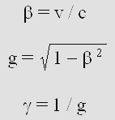
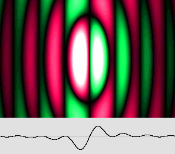
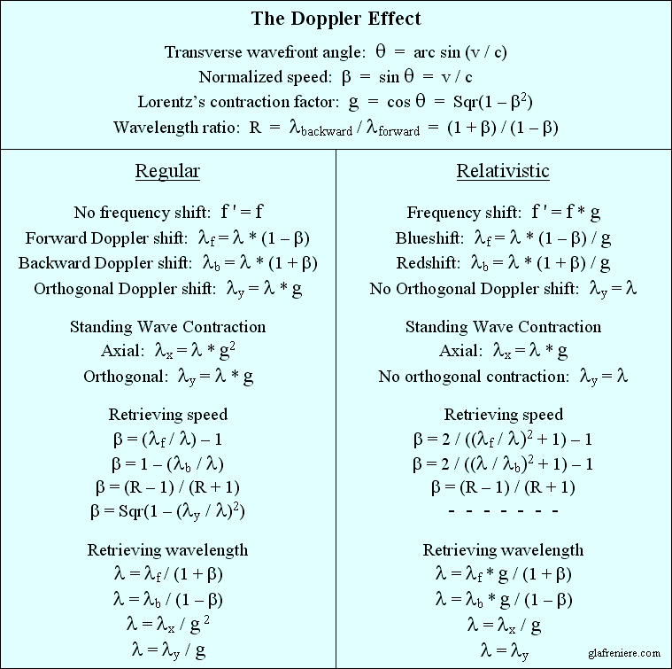
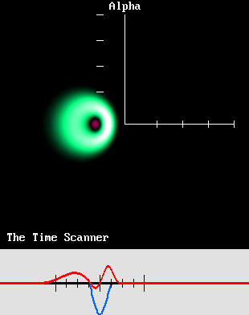
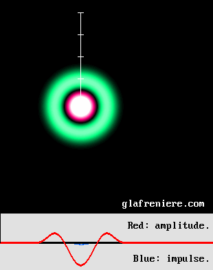
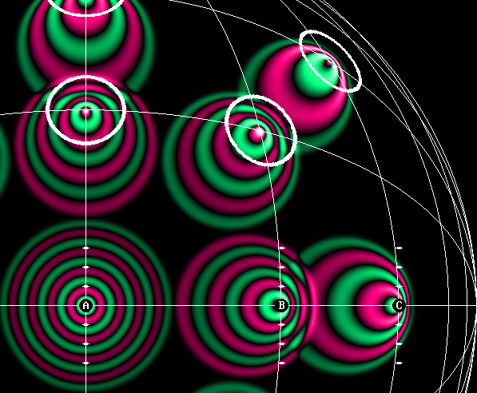
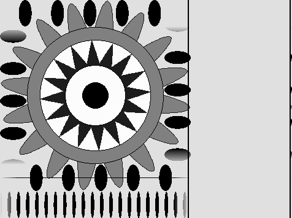

|
Lorentz's original equation set. By 1887, the Dutch physicist Hendrik Antoon Lorentz (1853 – 1928) was extremely concerned about Michelson's researches. Naturally, his goal was not to elaborate the theory of Relativity. He was just trying to explain why the Michelson interferometer failed to detect the absolute motion of the Earth through the Aether. FitzGerald had suggested that matter contraction might explain this unexpected result. In 1895, Lorentz found that any contraction or expansion of this apparatus according to his preliminary equations would end up with a null result. The only condition is that the light path along the displacement axis must be shorter than that of the transverse one. Then the transit time difference due to the Doppler effect is cancelled. In addition, Lorentz noticed that this would introduce some time effects. Next, Lorentz had to determine the exact contraction value among a range of possibilities, considering that just one contraction value is compatible with the corresponding time effects. He also had to take into account a constant "aberration" ratio which was discovered by Michelson. It is a consequence of the Doppler effect. In this page, this aberration is assimilated to Lorentz's contraction factor "g". Space contraction (matter contraction, actually) is among the basic principles of Relativity. But unfortunately, the gamma factor does not account for such a contraction, being larger than one. I am of an opinion that this anomaly is misleading. That is why I suggest replacing the gamma factor with Lorentz's contraction factor, which is the reciprocal: g = 1 / gamma. Its value is easily given if one adopts the beta normalized speed, which was established by Henri Poincare.  Lorentz and Henri Poincare worked together on this problem for ten years. They considered a moving electron and they tried out several contraction and time values in order to modify its electromagnetic fields in such a way that it would appear stationary. By 1901, Lorentz had already succeeded. In 1904, he finally released an equation set supporting his theory, albeit today's version shown below is somewhat different. In 1901, however, Poincare was already working on a Relativity principle. In 1901, in his book "Electricity and Optics", he pointed out that the absolute motion is impossible to detect. He also admits at that time that Lorentz had already found that Voigt's constant "l" should be equal to unity. In 1904, Poincare's theory was exposed in St-Louis, USA, and it was published in 1905. It turns out that the "Lorentz Transformations" are more exactly a transposition of Poincare's 1905 equations.
The Lorentz Transformations. The reversed equation set is preferable. In the original set, the x and t variables refer to the moving electron. This is a rather unknown detail which should be carefully examined. Below is a text from Poincare's version of Relativity (1905).
Poincare says very clearly: "The Lorentz transformations replaces the actual moving electron by an ideal stationary electron". This means that he applies the x' variable to the stationary electron, which is totally confusing. Hence, I propose in this page a simpler reversed equation set where x and t represent more logically the stationary electron. As an additional benefit, those "transformed transformations" prove to be more easily understandable. Maxwell's equations are irrelevant. Most texts from Lorentz, Larmor and Poincare are available on the web. Unfortunately, they all make use of complex calculus related to Maxwell's equations. The problem is that very few people are capable of dealing with those electromagnetic concepts. For instance, authors of books on radio-electricity are well aware that experimental results are very often different from theoretical ones. As a matter of fact, Lorentz himself wrote in 1920 that less than 20 physicists in the world had a fairly good knowledge of Relativity. And nowadays, it is even worse. The point is that Lorentz himself admitted that his equations were similar to Woldemar Voigt's ones, whose goal in 1887 was more simply to cancel the Doppler effect. I could check that those equations indeed produce this effect on sound waves, which definitely do not require Maxwell's equations. This is easily verifiable because one just needs to deal with sine and cosine functions, the results being displayable on the computer screen. For example, you may check this program, which analyses the effects of four different frequency shifts (press A, B, C or D) on the Doppler effect using Voigt's revisited equations. Doppler_Voigt_transformations.bas Doppler_Voigt_transformations.exe You may also press any key from 0 to 9 in order to select the beta speed. Clearly, this is all about the Doppler effect, which is a quite simple phenomenon. It surely doesn't require some complicated calculi involving Maxwell's equations. In short, the use of Maxwell's equations is a major and unnecessary obstacle. Frankly, it is best to stay away from them. Lorentz's contraction factor g and Poincare's beta normalized speed. I reiterate that the letter g will represent Lorentz's contraction factor, originally known as "the aberration". Its value is given by the reciprocal of the well known gamma factor, which should be avoided because its leads to some severe misunderstandings. The factor g replaces the bulky Sqr(1–(v^2/c^2)) which is present in Lorentz's equation set shown above. In addition, once again for the sake of simplicity, it is preferable to adopt Poincare's "beta" normalized speed, which is given by: v / c. In this case, one obtains c = 1 so that c squared remains 1 and may conveniently be removed from the equation set. Thanks to those elementary adjustments, the Lorentz transformations become much simpler. They also become amazingly explicit, showing four transformations (hence the use of the plural). Two of them apply to space measures and two more apply to time measures.
The Lorentz transformations. This is the reversed and revisited version.
If you still don't see the relationship with Lorentz's original equation set, the first move in order to retrieve them is to extract the x variable from the right side of the upper equation, like this: x = (x ' – (beta * t)) / g Now, the denominator is occupied by Lorentz's contraction factor g, which replaces Sqr(1–(v^2/c^2)). Secondly, v replaces beta so that Lorentz's v * t remains correct on condition that the v, x and x' variables are no longer normalized in light-second units but rather according to the MKS system. x = x ' – (v * t) / g And thirdly, the x variable should preferably refer to the unmoving system. That is why x and x' must be swapped. However, swapping the t and t' variables proves to be incorrect. There is no other way out: Voigt confused the t and t' variables. Lorentz and Poincare did not notice the error either because the t time is an arbitrary data which must be known before applying the transformations. Obviously, any arbitrary time seems to yield the correct values on paper. The error indeed remains hidden using only one x coordinates because the symmetry works. However, it does become well visible on a computer screen (as a distortion in the Doppler effect) when the transformations involve thousands of pixels and coordinates. Below, x' is back on the left side and the equation is finally that of the original Lorentz transformations.
Lorentz's original, yet simplified equation. It is equivalent to Poincare's equation, which rather uses the beta speed and the gamma factor. x' = gamma * (x – beta * t) The aether. The Lorentz Transformations apply to waves as soon as motion is to be taken into account. It has be seen that Voigt's version is useful in order to show on a computer screen how any kind of waves should experience the Doppler effect. The author of the computer program must be fully aware that the pixel coordinates are equivalent to those of a Cartesian system of coordinates, which is postulated to be stationary with respect to the wave medium. There is no place here for a so-called Galilean frame of reference. And I must add that the goal of the Lorentz transformations is not to "transform space and time", which is definitely absurd. No doubt, Lorentz was a great physicist. What's more, and this is of the utmost importance, Lorentz strongly believed in the existence of the aether when he elaborated his equations (I write aether in order to be respectful to Descartes, who coined the word éther from the Greek "aither", the French acute accent being actually a second vowel). Considering that nobody ever demonstrated that the aether does not exist, it is rather deceiving that today's scientists consider this as a certainty. Definitely, the Lorentz transformations should be examined and tested (up to now, nobody did!) according to Lorentz's original concept. Otherwise they should not be named after him. Unfortunately, Lorentz changed his mind later because he could not find any mechanical reason explaining matter contraction. According to Poincare, this "strange property" looked very much like a "thumb snap", which in English may be translated more exactly as a "helpful hand" conveniently given by Nature in order to hide from us our absolute motion. But fortunately, we did find two excellent reasons for this to happen. Firstly, Louis de Broglie discovered that matter exhibits wave properties. This is especially verifiable in observing the electron diffraction patterns. And secondly, Mr. Yuri Ivanov discovered more recently that "lively standing waves" (let's call them Ivanov's waves) are undergoing a contraction. That is why it appears very likely that moving matter must undergo a contraction. It is on longer a Deus ex machina, that is to say an unexpected and improbable event which has no logical counterpart and which conveniently intervenes in order to fix an otherwise unsolvable issue. Lorentz never totally abandoned the idea of an aether. He wrote in 1920:
Clearly, Lorentz had to postulate that the aether exists in order to elaborate his transformations. Poincare also admitted that "this hypothesis is useful in order to explain those phenomena". Even after 1920, Einstein himself did not totally reject it either. Hence, the idea that the aether does not exist should be considered as highly suspect, especially because the real nature and mechanism of electromagnetic fields are still totally unknown today. At all events, if you are still clinging to the idea that the aether does not exist, you are nevertheless invited to examine the simpler Alpha version of the Lorentz transformations below. It refers to a phenomenon which was discovered by Mr. Yuri Ivanov in 1981. I found that it is reproducible using an equation set which I called the Alpha transformations because it is the very beginning of the New Mechanics, a new science created by Henri Poincare. This phenomenon is highly practical, physical, indeed undisputable. As a matter of fact, it is easily reproducible and verifiable because it also applies to sound waves, which do need a medium such as air in order to propagate. And it will nevertheless lead us to Relativity. In this case, arguing that the gaseous fluid named "air" does not exist is definitely not an option! The Lorentz transformations apply to three phenomena. I spent years of my life wondering what was the basic cause of the Lorentz transformations. Until recently (2010), I was quite sure that their purpose was merely to induce or neutralize the Doppler effect. However, I finally discovered that they apply differently to three separate phenomena: 1– Ivanov's standing waves. 2 – The electron. 3 – Matter. This is why the x and t variables are to be redefined according to each of them. But surprisingly, the required equation set is the same for all three of them. This sheds some new light on the Lorentz transformations. It also explains why Lorentz himself did not oppose a stronger resistance to Poincare's Relativity Postulate. Poincare indeed considered that optical phenomena were relative and that the aether was not so important in that context. Thus, he severely modified Lorentz's absolute point of view much the same way Einstein did. At this point, I would like to point out that my Time Scanner does induce or neutralize the Doppler effect, hence exactly the same way Poincare's reversible equations do. This is no surprise because the scanning speed of this highly polyvalent device is that of the phase wave, which was discovered by Louis de Broglie. The phase wave is a mere consequence of Lorentz's time equation, though. This strongly suggests that, even in the case of matter, we are dealing with a wave phenomenon. Acknowledgement. I would like to warmly express my thanks to Mr. Sergi Blanchard, whose extended knowledge in astrophysics and mathematics were helpful in making things becoming clearer. This person has the flair of a true scientist. He is capable of detecting any suspicious reasoning and of finding his way through total blackness. Recently, his comments were very often the departure point of those new discoveries. Far away from here, from his beloved Occitania, he watches with great interest my attempts to renew today's physics, which has become an incredible mess. Without him, this great adventure would have been significantly more laborious and much less fruitful...
1 – THE ALPHA TRANSFORMATIONS (applies to Ivanov's Standing Waves). In 1981, Mr. Yuri Ivanov discovered a fundamental phenomenon which he called lively standing waves. It is a well known fact that two sets of identical plane waves traveling in opposite directions produce plane standing waves. However, nobody had hitherto experimented what would happen if wavelengths were different. Mr. Ivanov experimented this phenomenon using speakers and microphones in the presence of wind. He found that the characteristic node-antinode standing wave pattern was surprisingly moving, thus carrying the wave energy at the same speed. In this page, this speed is called "alpha". It is normalized according to c = 1 using Poincare's method. Hence it is always inferior to the speed of light or sound. What's more, Mr. Ivanov discovered that the pattern was undergoing a contraction. And furthermore, Ivanov's waves also exhibit a phase wave, which was firstly described by Louis de Broglie. The phase wave speed is given by the reciprocal of the alpha speed: v = 1 / alpha so that it is always higher than the speed of light or sound. In this perspective, according to de Broglie, the speed of light is indeed given by the geometrical mean between the alpha speed (de Broglie's "group" speed) and the phase wave speed. I hereby introduce Ivanov's Standing Waves:
Ivanov's waves exhibit three remarkable properties. 1 – The node and antinode pattern is moving at the alpha speed. 2 – Antinodes (shown in white) contract according to Lorentz's contraction factor g. 3 – A phase wave appear, showing regularly spaced dark stripes moving to the right.
All this is fundamental. It is the very basis of the Lorentz transformations and it leads ultimately to Relativity. Moreover, because those waves are definitely not "standing" any more, they require a more appropriate name. That is why I suggest that they should be named "Ivanov's waves". Considering that Mr. Ivanov is clearly the discoverer, he also deserves it because he soon realized that he was in touch with something really important. He calls it "rythmodynamics". He especially showed that, on the only condition that chemical bonds are performed by standing waves, matter and especially the Michelson interferometer must contract. This phenomenon explains Michelson's null result. Unfortunately, Ivanov did not agree with Lorentz and Poincare, who had preferred a contraction according to g instead of g squared. He ended up with his own "Ivanov Transformations", which apply only to acoustic phenomena. Below are the Alpha Transformations, which are easily identifiable because of the use of the alpha speed .
The Alpha transformations. This equation set is similar to Lorentz's one but the variables must definitely be interpreted differently.
Please check that this equation set is capable of reproducing Ivanov's waves. You may firstly examine this video: Standing_Waves_03_Transformations.mkv Standing_Waves_03_Transformations.bas For the record, I repeat here that I firstly called "alpha" the relativistic mean speed between a stationary emitter and a moving one. But it should henceforth more specifically be attributed to the speed of Ivanov's standing waves. The Lorentz contraction factor g linked to the alpha speed can easily be deduced from it: g = Sqr(1 – alpha^2). However, in this case, it may also be given by the arithmetic vs. geometric mean wavelength ratio. The y and z variables are useless here because we are dealing with plane waves only. Yet, they are still useful in order to reproduce the transverse "lively standing waves" shown farther below, which obey the same alpha transformations. What do the variables stand for? The Alpha transformations are basically Lorentz's ones, but their application differ significantly because the x and t variables refer neither to matter nor electromagnetic fields. They more specifically refer to the geometric mean of Ivanov's interleaved wavelengths. The resulting wavelength, which is arbitrary, is used as a reference. The Cartesian x variable stands for coordinates in such wavelength units. The t variable, in pulsation units, refers to the phase of an emitter which would produce the same arbitrary wavelength. One may rather use the arithmetic mean, but this would require the use of g squared instead of g. Because a choice must be made, it appears preferable to resolutely cling to the geometric mean wavelength. Lorentz's contraction factor may be given by the arithmetic vs. geometric mean wavelength ratio. The alpha speed may be deduced from the wavelength ratio R. In this case, all three transformations Alpha, Beta and Gamma become identical: R = lambda' / lambda alpha = (R – 1) / (R + 1). Please note that the Alpha transformations apply to acoustic and optical waves as well. After all, the goal is merely to check out what occurs when two wave trains whose wavelength differ are moving on two coincident paths. Starting from scratch, and accounting only for those two basic wavelengths, the conclusion nevertheless leads to Relativity. This is quite a giant step for such a little effort. But even though it is really not complicated, the scientific world had to wait until Ivanov's experiments in 1981. Unfortunately, Mr. Ivanov ended up with his own transformations, which apply to acoustic phenomena only. They are nonetheless useful because they reproduce the regular acoustic Doppler effect. As a matter of fact, it is a special case of the Voigt transformations where k = g instead of Lorentz's unnecessary k = 1. The bad news is that Ivanov's transformations do not apply to the electron, whose frequency slows down according to g. For this reason, they do not apply to matter and hence, they cannot explain Relativity. Incidentally, around 1895, Lorentz himself had made Ivanov's incorrect choice, which leads to a more severe axial contraction according to g squared and to a transverse contraction according to g. Fortunately, by 1904, he switched to the option which produces no transverse contraction. Six short videos. I made several videos showing some still unknown characteristics of Ivanov's waves.
Ivanov's waves using the Delmotte-Marcotte virtual wave medium: Standing_Waves_01_Ivanov.mkv This one shows more simply the result of the mathematical wave addition: Standing_Waves_02_Theoretical.mkv PLEASE VERIFY – The Alpha transformations truly reproduce Ivanov's waves: Standing_Waves_03_Transformations.mkv This is the Hertz test in a moving frame of reference (Delmotte-Marcotte): Standing_Waves_04_Hertz.mkv The Hertz test at the Alpha speed. Emitter A is stationary; emitter C speed is beta: Standing_Waves_05_Alpha.mkv Ivanov's waves in the presence of acoustic Doppler compared to relativistic Doppler: Standing_Waves_06_Doppler.mkv
The third sequence Standing_Waves_03_Transformations.mkv and the program Standing_Waves_03_Transformations.bas prove undoubtedly that the Alpha transformations do reproduce Ivanov's waves. This is a major breakthrough because the use of Lorentz's equations is no longer limited to Relativity. In this case, they merely apply to a quite ordinary phenomenon. We are not dealing with some hypothetic and unrealistic space-time transformation. The equations just transform the wavelength and the phase. The Alpha transformations still prove to be highly useful in order to understand Relativity. This is why I carefully summarized the basics of the Alpha Transformations in the following table.
The Alpha Transformations apply to Ivanov's standing waves (acoustic or radio). The distance units x refer to an arbitrary wave whose length is given by the geometrical mean wavelength. The phase units t refer to the time required for such a wave to travel this distance. It is all about distance and phase, not space and time. No Relativity here: all is absolute!
I would like to insist on the geometrical aspect of those highly Pythagorean and Cartesian transformations. On the contrary, today's Relativity is desperately esoteric. In order to avoid skidding again on a road which proves to be particularly slippery, one must realize that the basis of all this is Pythagoras' theorem. Below, the hypotenuse length is normalized to one. It is the equivalent of the speed of light, which was also normalized to one by Henri Poincare in order to simplify Lorentz's equations. Thus, c = 1 and alpha (or beta) = v/c. The lengths or the adjacent sides now represent Lorentz's contraction factor g and the alpha speed. However, quite surprisingly, c and g remain proportional to the arithmetical mean and the geometrical mean of the two interleaved waves. This is absolutely amazing!
In this example, the two interleaved plane waves traveling in opposite directions measure respectively 50 and 150 pixels. The x variable must be established according to the geometrical mean wavelength, hence 86,6 pixels. The Alpha equations will then indicate the correct x' coordinate. They will also indicate the correct t' phase (which may be used in order to establish the time) for this point. This means that in the beginning (that is to say, when t = 0), x' and t' are simply given by: x ' = g * x. t ' = –alpha * x. The first equation indicates that a moving standing wave structure must contract according to Lorentz's contraction factor g. The second one transforms the local phase in such a way that a phase wave (de Broglie's) appears. In the case of matter, this phenomenon must rather be interpreted as Lorentz's famous "local time". Displaying Ivanov's standing waves. Please bear in mind that the unique function of the Alpha Transformations is to reproduce Ivanov's standing waves on a computer screen. For example, let's suppose that one needs just one image of this phenomenon. The x coordinates are given in wavelength units (in the example shown above, lambda = 86.6 according to the geometrical mean). So, x = 1 means a distance of 86.6 pixels to the origin. Considering that the t units represent the wave period (i. e. the pulsation phase), which is periodic in nature, this distance x = 1 indicates that the period is also t = 1 (constant t = 0 at the origin). This is possible because there are no y or z coordinates, which would add to the actual distance. Please note that the t variable does not represent Lorentz's time, albeit accurate clocks indeed use an oscillation period in order to establish the time. Each pixel needs specific x and t variables so that an array of variables (one dimension only here) is required. Finally, in order to display this arbitrary untransformed wave on the computer screen, one must convert this t period into radians: x = distance en pixels / lambda en pixels t = x radian = 2 * pi * t If x = 100 pixels, one obtains: radian = 1.1547 * 2 * pi = 7.255. The wave amplitude there is given by: sin(radian) = 0.826. It is nil at x = 0 and 1 at x = lambda / 4 (quadrature). Because we are dealing with plane waves, the same amplitude may be repeated vertically on a 50x100 pixel stripe, for example. Each pixel need a different calculus. I prefer displaying waves in black when amplitude is nil and in white when amplitude is maximum. In order to identify positive and negative amplitude, it seems best to represent positive using emerald green (regular green plus 50% blue) and magenta red (regular red plus 50% blue). The goal is to remove the annoying yellow dominant color and, most important, the wave behavior is more easily interpreted this way. One may rather use yellow and blue, but the yellow color is much brighter than blue. Then, in order to display Ivanov's waves, one must naturally make use of the Alpha Transformations. x ' = 0.866 * x + 0.5 * t t ' = 0.866 * t – 0.5 * x And finally, convert the x' variables in pixels and the t' variables in radians: displaying the pixel: x ' * lambda radian = 2 * pi * t ' amplitude = sin(radian) This produces one image only. In order to obtain a sequence of images, it becomes necessary to progressively increase all the t variables according to a constant step. For example, this step may be 1 / 48, depending on the required number of images per cycle. Then the overall period will reach a full cycle after 48 images. During this time, the waves will have traveled 86.6 pixels whatever their real wavelength. The Alpha Transformations may reproduce transverse "lively standing waves". It was shown in the page on plane standing waves (Ivanov's waves) that transverse standing waves theoretically contain two tilted sets of traveling waves whose wavelength is equal. Thus, their geometrical mean wavelength is no longer required. Because they are tilted to a theta = arc sin(v/c) angle, their direction is not truly opposite so that both wave trains are constantly following the system. The wave-fronts being tilted, the wavelength as measured on a transverse axis seems longer. However, applying the Alpha Transformations to the stationary system still produces the equivalent moving system. The wavelength of reference may be that of the stationary system. In addition, one must use Lorentz's equations: y' = y; z' = y in order to deal with transverse axes. Surprisingly, the transverse wavelength remaining constant, the frequency theoretically slows down. But this is not mandatory because one may prefer considering the regular Doppler effect. In this case, there is no frequency shift and a wavelength contraction occurs transversally according to Lorentz's factor. Here, the system alpha speed is rather difficult to establish because the phase wave is the only visible structure. It looks somewhat like a checkerboard but it is more or less distorted because of the theta angle. This phenomenon occurs because of a scissor effect. Here too, the phase wave is moving faster than the speed of the waves: v = 1 / alpha.
Transverse "lively standing waves". The wavelength is the same in both directions. Those waves are traveling apparently in opposite directions. They actually propagate according to an angle: theta = arc sin(alpha). The phase wave, showing interference fringes moving forward, . Its peed is equal to: 1 / alpha. The transverse standing waves are well visible in this video:
The electron and matter itself behave this way. Considering simultaneously longitudinal and transversal standing waves, one obtains a fairly good idea of how a moving electron should behave. Ivanov's standing waves indeed indicate that the electron consists of spherical standing waves. This idea was proposed by Mr. Milo Wolff around 1980. By 2002, in my book "Matter is made of waves", I myself had found that such a system should undergo the Doppler effect in order to move. And today, it turns out that the electron is undergoing an unusual Doppler effect according to the Beta Transformations (see below).  This is the central core of the electron, which is made of spherical standing waves. The contraction and the phase wave are well visible. Speed: 0.866 c. Contraction: 50% (g = 0.5).
The following argument is fundamental : if matter is made of standing waves, or more practically on condition that chemical bindings are involving the electron wavelength, then any moving material structure obviously contracts according to Lorentz's contraction factor. Additionally, moving clocks must display slower seconds and exhibit a time shift. This is the absolute effect of motion on matter, and it depends strictly on the speed of its wave structure with respect to the aether. Lorentz's absolute point of view proves to be correct. Those effects are not relative. They are recorded in a quite surprising way by a moving observer, though. That is why Poincare and Einstein, who were theoretically wrong, finally ended up with correct predictions anyway. It will be demonstrated below that, in the case of matter, all becomes much simpler. The x and x' variables stand for the distance to the origin, in light-second units, using a Cartesian – not Galilean – frame of reference. The t and t' variables stand for the time displayed by clocks in second units. Surprisingly, the required Gamma equations remain identical to those of the Alpha and Beta sets. Now, the fundamentals being exposed and demonstrated, indeed cast in stone forever at this point, Relativity becomes more easily understandable. Mr. Ivanov discovered the reason why matter contracts. Lorentz discovered that matter contracts according to g, without any transverse contraction. It is the only possible option. Today, we must acknowledge that Mr. Yuri Ivanov went farther than Lorentz by exposing the mechanical reasons of this phenomenon. Having found that "lively standing waves" contract, he put forward that matter itself should contract, given the fact that chemical bindings are already well known to be dependant on the electron wavelength.
2 – THE BETA TRANSFORMATIONS (applies to the electron) The Alpha, Beta and Gamma equations sets seem identical. However, the Beta transformations apply solely to the electron because the meaning of the variables and their pre-calculus differ significantly. Considering that Lorentz and Poincare also applied Lorentz's equations to the electron and to its electromagnetic fields, we are definitely dealing here with the original Lorentz transformations. This is why the electron speed will be normalized here according to Poincare's beta = v/c. Additionally, the electron being a three-dimensional spherical standing wave system, the Cartesian frame of reference includes the transverse y and z axes, whose coordinates do not transform.
The Beta transformations. This is merely the reversed version of the Lorentz-Poincare original equation set.
Except for the use of the beta speed, this set is identical to that of the Alpha transformations. Firstly, the x, y and z variables stand for the electron coordinates when it is at rest. The units refer to the electron wavelength, which is still unknown, but may be set to an arbitrary number of pixels on a computer screen. Hence, in 2-D, the coordinates (x = 3; y = 4) after conversion from pixel to wavelength units indicate that the distance from this point to the electron center measures Sqr(3^2 + 4^2) = 5 wavelengths. Secondly, the t variable stands for the phase for the (x, y) coordinates. This phase is given by the distance to the origin. As a matter of fact, it is undergoing a complete rotation (2 pi radians) for each additional distance of one electron wavelength. Thus, using a 2-D display, the variable t simply stands for this distance in wavelength units. t = Sqr(x^2 + y^2) This is easily verifiable because the stationary electron may be displayed using the cardinal sine function on condition that the t phase (or t' for the moving electron) is converted into radians: radian = 2 * pi * t amplitude = sin(radian) / radian This is what Mr. Jocelyn Marcotte demonstrated using his own version of the Delmotte-Marcotte wave medium. There is a singularity: if radian = 0, then amplitude = 1. Finally, using such variables, the Beta equation set transforms a stationary electron into a moving electron.
The moving electron (on the right side) exhibits a stunning phase wave.
The video below shows my moving electron without the 3-D effect. You may examine the program which produced those images by means of the Beta transformations. Doppler_Moving_Electron.bas Doppler_Moving_Electron.exe
The "time" equation: t ' = g * t indicates that in the case of the electron, a totally new and amazing phenomenon takes place. It it moves, the electron frequency slows down according to Lorentz's factor g.
That is why the electron Doppler effect differs from the acoustic one: it is "relativistic". Relativity is certainly true because it was verified many times in the past. It is accepted here as Poincare's 1904 Relativity Postulate, but certainly not according to Poincare's opinion that optical phenomena are relative. It is rather according to Lorentz's conviction that Relativity is the result of a mystification due to the relativistic Doppler effect, which is consistent with the existence of the aether. The main Principle behind this is that the alpha speed must appear (as the result of a mystification) to be exactly intermediate between zero and beta. In the Alpha example exposed above, the alpha speed was 0.5 c and the two wavelengths were: lambda = 50 and lambda' = 150. Now, let's consider an electron at rest whose wavelength is 50 pixels on a computer screen. In this case, another electron has to move away very fast in order produce a relativistic Doppler backward lambda' = 150 pixels. Its speed (or that of a distant galaxy, which behaves similarly) is given by: beta = 2 / ((lambda / lambda')^2 + 1) – 1 beta = 2 / ((50 / 150)^2 + 1) – 1 = 0.8 c Lorentz's contraction factor: g = Sqr(1 – beta^2) = 0.6 Relativistic redshift: lambda' = lambda * (1 + beta) / g lambda' = 50 * (1 + 0.8) / 0.6 = 150
The alpha speed 0.5 is definitely not the arithmetic mean speed between 0 and 0.8 c. The mean speed is rather 0.4. However, it will truly appear to be the exact mean speed according to Poincare's law of speed addition, which is given by: beta'' = (beta + beta') / (1 + beta * beta') Adding 0.5 to 0.5: beta'' = (0.5 + 0.5) / (1 + 0.5 * 0.5) = 0.8 Surprisingly, adding 0.5 to 0.8 using Poincare's law produces a 0.92857 speed which is still slower than the speed of light. What's more, even if one adds 0.5 to the result again and again, the electron never reaches the speed of light. That is why Poincare said in 1904 (Saint-Louis, USA) that the speed of light is an unattainable limit. Inversely, Lorentz's factor g value for beta being 0.6, the alpha mean speed is given by:
Or more simply: alpha = (1 – g) / beta alpha = (1 – 0.6) / 0.8 = 0.5
Now, let's consider an observer who is moving away from a stationary electron at the alpha 0.5 speed. On the opposite side, and apparently at the same distance, another electron is moving away from him at the beta 0.8 speed. Being totally mystified, this observer may consider that he himself is stationary and that the two electrons are moving away from him in opposite directions at the same alpha speed. Similarly, let's suppose that we are observing two galaxies moving away from the Milky Way at the same 0.5 speed and in opposite directions. This is obviously because both ones must exhibit the same 1.732 redhift. However, it might also be because one galaxy is stationary while the other one is moving at 0.8 c. In this case, the Milky Way speed should be 0.5 c. The calculus being identical, and considering only the redshift, it is quite impossible to determine which hypothesis is the correct one. Actually, there are many more side effects such as a contraction and a time shift. But surprisingly, they all contribute to the same sublime mystification. This is the most stunning application of the alpha speed. For example, using the Hertz test, the observer would indeed obtain equal wavelengths from both electrons or galaxies. Below is the video showing a similar situation with a beta speed of 0.5 and an alpha speed of 0.2679. Considering today's sophisticated instruments, this phenomenon is easily verifiable right now using much slower alpha and beta speeds. The point is that most astronomers still believe that Relativity doesn't apply to distant galaxies. They prefer relying on the theory of the expansion of the universe. According to them, our world should expand much the same way a raisin pudding does in the oven. The raisins distance to one another increases proportionally so that, using the coordinates of a small group of raisins, it would be impossible to detect where is the center of the whole pudding. Well, they are wrong! Our universe being obviously in expansion, the Big Bang must be relativistic. This statement will soon be demonstrated. My page on the Relativistic Big Bang is still available only in French, but you may already examine the tables, graphics and videos because most of them are in English. For example, according to Mr. Saul Perlmutter's observations, the expansion of the universe is speeding up. This conclusion will prove to be false because the Hubble constant does not take the Lorentz contraction into account. There are far more galaxies over .9 c than under 0.1 c because they contract, and this includes the distance to one another. This is no raisin pudding. As a matter of fact, relying on the Hubble constant, which doesn't account for the Lorentz contraction, the true distance of a very fast and distant supernova is incorrectly recorded so that it is no longer consistent with its constant brightness. Mr. Perlmutter had to put forward his conclusion because of the surprising results of his researches. It was indeed a brilliant quest. Some day, however, astronomers will admit their error. Then Mr. Perlmutter will rather be known as the man who verified that Relativity also applies to the universe.
The table below compares the acoustic Doppler effect to the relativistic one.
 The relativistic Doppler effect is the consequence of the slower frequency of the electron: f ' = g f. For instance, a supernova redshift is given by: (1 + beta) / g. In the case of sound, the backward Doppler effect calculus is simpler: 1 + beta.
3 – THE GAMMA TRANSFORMATIONS (applies to matter). The Gamma Transformations apply to matter. This is obviously what Lorentz had in mind when he suggested that the Michelson interferometer should undergo a contraction on the displacement axis x. For the third time, they are given by the same equation set. But now (at last!) the variables x, x' and t, t' really stand for space and time units.
The Gamma Transformation of matter. The x and x' variables stand for absolute distances in light-second units (300 000 km). The t variable stands for the absolute time in second units. The t' variable stands for slower g * t second units inducing a –beta * x time shift.
The space variables refer to absolute distances in light-second units. The t time variable refer to absolute seconds while the t' one rather refer to slower seconds being displayed by moving clocks, which are ticking slower. Those are arbitrary units, they were established in our moving world which is transformed, yet they are acceptable as absolute units because they are likely to be imposed anywhere else. Because all three equation sets are identical, we are definitely dealing with waves. Even in the case of matter... The mechanical effects of the Lorentz Transformations. My Gamma version of the Lorentz Transformations is more easily understandable, indeed transparent. The reversed equations very clearly indicate what Lorentz had in mind. Please note that below, b stands for beta. Now, let's check this out carefully:
1 – Moving matter contracts according to : g x. The variable x stands for distances in light-seconds and the t time units are in seconds. For mechanical reasons, any material structure including voids such as our solar system also contract this way. Especially, this causes the Michelson interferometer to constantly correct the aberration so that the results are remaining null. 2 – The object whose coordinate is x' at time t = 0 moves to x' + beta * t after t seconds. This is the most obvious translational motion. For example, if an electron moves at 0.5 times the speed of light, his new position will be 150 000 kilometers beyond the previous point after a 1 second delay. This merely reproduces Galileo's transformations: x' = x – v t except that here, x refers to a truly stationary Cartesian system of axes. The speed is positive: as a convention, the electron then moves to the right.
3 – Moving clocks are indicating slower seconds according to: t' = g t. 4 – Moving clocks also exhibit a time shift according to: – b x. Note the minus sign: clocks at the rear are in advance.
Considering that matter exhibits wave properties and that it transforms in an absolute way in the presence of the aether, Relativity as a mystification can now be easily, totally, and undoubtedly deduced from the Lorentz transformations. Relativity is not a theory any more. It is a law of Nature. Poincare's reversible equation set. The Beta transformations produce the Doppler effect when applied to waves emitted by a pulsating wave center. However, they may neutralize it as well if it is present (it was indeed Voigt's goal in 1887). My Time Scanner performs similar reversible Doppler effects.   Here is a video showing a smoother view of this phenomenon: Time_Scanner_Doppler.mkv
Henri Poincare released a symmetrical version of the Lorentz transformations which may either induce or neutralize the Doppler effect. My own version being already reversed, it must be reversed again the way Poincare did. This is done merely by swapping the variables and the signs.
The Lorentz Transformations "group" revisited (Poincare's style).
SIMILAR TRANSFORMATIONS WERE ELABORATED BY MANY PEOPLE In 1887, and later with the help of Morley, Michelson conducted a series of experiences using his famous interferometer. Surprisingly, this highly sophisticated device failed to reveal the motion of the earth through the aether. However, the experience was not a failure. The null result was more exactly an indication that a still unknown phenomena had manifested itself. This is why many scientists participated to this great adventure. Woldemar Voigt. In 1887, Woldemar Voigt elaborated an equation set whose goal was to neutralize the Doppler effect on Maxwell's equations. Apparently, Lorentz was totally unaware of its existence. Here is a transposition:
Obviously, those equations are incorrect because of the absence or Voigt's constant and the presence of Lorentz's factor (q according to this notation) transforming y and z. However, many years ago, I could find another version of the Voigt transformations which was significantly different because it included an additional k (or "l") constant, which according to Lorentz was also present in Voigt's version. I still ignore where this version came from, but I could correct two errors and modify them in such a way that they now work fine. Thus, whoever elaborated them, he was certainly on the right track.
The Voigt transformations revisited.
This equation set produces a variable Doppler effect according to a frequency which depends on the constant k. The program below is capable of performing four different transformations: press A, B, C or D to select one. If k = 1, the result is Lorentz's slower Doppler effect showing no transverse contraction: x' = x; z' = z. Doppler_Voigt_transformations.bas Doppler _Voigt_transformations.exe This indicates that whenever the Doppler effect transforms radio waves, it is a relativistic effect. Formerly, only very fast speeds were known to introduce relativistic effects. Today however, because our instruments are more and more accurate, we are aware that radio signals emitted from the International Space Station do exhibit a Doppler effect even though it cannot be detected by astronauts in orbit. This Doppler effect being considerable, Einstein's Relativity cannot account for it because the Space Station definitely moves faster than the Earth's surface. There is no "reciprocity" any more and a preferred frame of reference must be considered. Please note that the Voigt transformations should not be considered only as a curiosity. The version below is great in order to produce the regular acoustic Doppler effect, which produces a transverse wavelength contraction according to g. In this case, because k = g, the set simplifies to:
The regular Doppler effect. Here, x, y, z stand for distance to origin in sound wavelength units and t stands for the pulsation phase.
Heaviside and FitzGerald. In 1889, Oliver Heaviside found that electrostatic charges should contract according to Lorentz's factor g, which was already known as "the aberration". His friend George FitzGerald then suggested that the Michelson interferometer may contract according to it. FitzGerald was right on this, but his hypothesis was never published. He did not suggest any time effect, either. On the positive side however, Lorentz admits in 1904 that the contraction hypothesis was proposed first by FitzGerald. This is why this phenomenon is known as the "Lorentz-FitzGerald contraction". Joseph Larmor. In 1897, Joseph Larmor suggested a transformation involving just a translational motion (x' = x – v t) without any x' contraction, but where the interferometer contraction might be the result of the time shift. This is an interesting, indeed brilliant idea. What's more, he was an enthusiastic supporter of the aether. From this point of view, he was the only unconditional adept of Lorentz's Relativity. In 1900, in his book "Aether and Matter", he proves to be very familiar with the transformations. The contraction factor is well exposed and the time equation indicates a time shift.
Joseph Larmor was well aware of Lorentz's researches and conversely. The same uncertainty exists between Lorentz and Poincare, who exchanged letters. It is hard to figure out what was new from each of them. It would be interesting to shed some light on their contribution to Relativity. I am of an opinion that Joseph Larmor was certainly an ace scientist. Yuri Ivanov. In 1981, Mr. Yuri Ivanov released his own transformations:
Yuri Ivanov's transformations (1981).
The Ivanov Transformations are interesting because they may correctly reflect the behavior of Ivanov's waves. However, there is no specification of a basic wavelength, or of the corresponding phase, which may be related to that of the stationary system. The Alpha Transformations refer to the mean geometrical wavelength. This is why the formulae are different, but they may still produce the same effects. Mr. Ivanov proposes a contraction according to: 1 – beta2, hence g squared instead of g as it is shown in Lorentz's version. He proposes a transverse contraction according to g, which is consistent with the regular Doppler effect. The time equation is unusual because of the use of a theta angle, yet the Doppler effect is indeed sinusoidal. All this is consistent with the acoustic Doppler, which applies only to sound waves. Mr. Ivanov's experiments were indeed conducted using loudspeakers and microphones. It must be pointed out again that the use of the arithmetical (not geometrical) mean wavelength leads to Lorentz's factor g squared instead of g while dealing with the Alpha transformations. This occurs when l = g in Poincare's version shown below, or when k = g in Voigt's version shown above. Interestingly, the table also refers to Galileo's transformations, which lead to his "Relativity Principle". Relativity is always the consequence of similar transformations. However, Galileo's ones are merely the expression of a reversible translational motion, which may be perceived differently by two observers whose speed is different. x ' = x – v t t ' = t Using Poincare's method (see much farther below), and considering that t' = t, one obtains this symmetrical equation: x = x ' + v t ' Henri Poincaré. In 1905, Henri Poincare discusses Lorentz theory (1904) in his book "Electricity and Optics". He introduces Lorentz's equation set (his own one, actually), which exhibits Voigt's constant "q" shown above (or "l "below, or "k" according to my own notation). The translational motion and the time shift are correct. In 1901, Poincare writes that, using the trial and error method, Lorentz had already found the correct value of this constant: l =1. Later, Poincare himself found it to be equal to 1 according to the Least Action Principle (c. f. Maupertuis, Euler, Lagrange). Furthermore, Poincare was especially good at estimating Lorentz's "local time" because he had worked at the "Commission des Longitudes" in France. He pointed out that a clock synchronization procedure using optical signals would end up with a time shift because of the motion of the Earth with respect to the aether. In his books, however, the results are clearly incorrect because he systematically rejects matter contraction as an absolute fact ("a strange property, a convenient thumb snap", he notes). The time shift according to: – beta * x in the time equation is accurate. Poincare's equations were released in 1905, after Lorentz's final ones (1904). They are clearly more accurate. They are also simpler because of the use of the normalized speed (epsilon). They also exhibit the famous gamma factor (k, actually), which is commonly used today in most texts on Relativity. The speed of light is set to unity so that the v/c normalized speed is always inferior to 1. In addition, c squared as 1 * 1 conveniently remains 1. Poincare claims that those equations were elaborated by Lorentz and he names them after Lorentz. One may doubt this, though, because Poincare was desperately humble. I suspect that this equation set is actually one of Poincare's multiple and magnificent achievements (The Relativity Postulate, the law of relativistic speed addition, the E = mc^2 equation, the New Mechanics, the similitude between inertia an gravity, among others). Today, all those innovations are systematically and unfairly assigned to Einstein. As a matter of fact, most of today's scientists reveal their ignorance (or bad faith?) when they claim that Einstein was a genius. One can find so many texts and references published between 1895 and 1904 about the Lorentz transformations and Relativity that Einstein's 1905 Special Relativity appears incredibly redundant. It is a well known fact that Einstein's main occupation before 1905 was to write résumés on the latest achievements in physics for the Annalen der Physik. He was obviously well aware of them. In addition, there is no evidence of some original preliminary studies before 1905. It is simply impossible that he elaborated the theory of Relativity in so small a period of time. After all, Lorentz, Poincare and Larmor, who were three eminent physicists, could solve this problem only after 10 years of hard work. The truth is that, with rare effrontery, Einstein just copied Poincare's ideas. Therefore, I will deliberately omit Einstein's equations here. They are indeed similar to Poincare's ones. This is no surprise: Einstein's Relativity is definitely a clone of Poincare's one. Unfortunately, Poincare was wrong, and so was Einstein. Only Lorentz's Relativity proves to be correct. What's more, it doesn't need esoteric and wacky concepts such as space-time transformations. In Poincare's equations below, the l = 1 constant may be discarded and k stands for the gamma factor. Those are known as "the Lorentz transformations", albeit they were most probably released in their ultimate form by Henri Poincare.
Poincare's outstanding equation set (1905). The unnecessary constant l = 1 is still present. Hendrik Lorentz.
In my opinion, Lorentz's most important discovery was the so-called "time dilation". It is actually the electron slower frequency, which is ultimately responsible for all phenomena to occur more slowly when matter is moving very fast. Clearly, Lorentz had solved the problem by 1901, well before he released his ultimate masterpiece: "Electromagnetic phenomena in a system moving with any velocity smaller than that of light", Amsterdam Academy, 1904.
This is Lorentz's version or the Lorentz Transformations (1904). The translation motion is absent and the time equation is questionable. Please note that k stands for the gamma factor: k = 1 / g. The unnecessary constant l = 1 is still present.
There are some serious discrepancies when comparing Lorentz to Poincare. Especially, the translational motion (according to: beta * t as shown below) does not appear in Lorentz's first equation shown above. Some interpretations suggest that it is already present in a previously modified x* variable: (x* = x – vt). Although this does make sense, there is no evidence of such a pre-calculus in Lorentz's 1904 paper. This absence of a translational motion is immaterial, though, because the important point is that matter really contracts, in an absolute way. Please bear in mind that x' refers to the stationary system so that it appears expanded here according to the gamma factor. Lorentz also found that moving clocks are ticking slower (the stationary clock is logically ticking faster according to the t' time), and that they should indicate a "local time". Unfortunately, Lorentz's time equation is somewhat fuzzy. To be honest, Poincare's version shown above is best. It is not that important because Lorentz described the theory more logically than Poincare, who rejected the idea that matter truly contracts.
POINCARE'S LAW OF SPEED ADDITION According to Lorentz and Poincare, inertia increases according to the speed in such a way that the speed of light is unattainable. For example, let's consider an observer who is already moving at half of the speed of light. From his point of view, he is stationary so that he may decide to accelerate in the same direction to half of the speed of light. But if it was true, he would then move exactly at the speed of light, which is impossible. Knowing this, Poincare elaborated the following equation: beta'' = (beta + beta') / (1 + beta * beta') According to this equation, the observer would finally move at 80% of the speed of light. To be perfectly logic, an astronaut who is already moving at 0.5 times the speed of light as seen from Earth should acknowledge that he is indeed moving that fast because he experienced considerable acceleration effects. Thus, the Earth is definitely a preferred frame of reference because its average speed (and consequently, his measure units) did not change. That is why Lorentz's Relativity appears preferable to Einstein's one.
THE ALL-AZIMUTH TRANSFORMATIONS Furthermore, the equations shown above cannot transform many items simultaneously if their speed or direction differ. This is especially the case for distant and very fast galaxies, which are surely undergoing the Lorentz transformations. On a small scale, it is possible to rely on the y' = y and z' = z equations. But if the goal is to represent the entire universe, then one needs a three-dimensional version of the Lorentzian transformations. No problem, here they are!
This is new: the Lorentz three-dimensional transformations. They firstly apply to the universe, which is expanding in a relativistic way. They may also perform the regular Lorentz transformations whatever the direction of a system. The formula: gxyz = gx gy gz introduces a new Law of Relativistic Speed Composition. The speed of light being unattainable, it works much the same way Poincare's Law of Relativistic Speed Addition does.
I elaborated those equations in May and June 2009. They were complicated in the beginning, but I succeeded in simplifying them so that they now look nice. Using them, the phase wave especially is very easy to obtain. I could also reproduce the motion of an emitter, whatever its direction, and induce the correct impulse while dealing with the Delmotte-Marcotte virtual medium. This is definitely the most significant mathematical achievement of my life. Below is an example of how those equations perform using Mr. Marcotte's wave algorithm.
 The all-azimuth transformations allow one to perform multiple Lorentz transformations, whatever the direction. Big_Bang_03_Multiple_Doppler.mkv The FreeBASIC program: Big_Bang_03_Multiple_Doppler.bas
Those nice all-azimuth equations, which I am very proud of, produce the usual translation, contraction, slower pulsation and phase wave (or time shift). However, it is now possible to transform many systems simultaneously whatever their individual speed and direction. My Time Scanner can do this more easily because it merely scans a scene using the phase wave speed: 1 / beta. The animations below were obtained using the three-dimensional transformations: – The Doppler effect on an oblique trajectory, using the Delmotte-Marcotte virtual medium : Relativistic_Doppler.avi – My moving electron, also on an oblique trajectory: Doppler_Moving_Electron_Diagonal.avi – De Broglie's phase wave, in the context of the expanding universe: Big_Bang_04_Phase_Wave.mkv – Here, I did not hesitate to transform Lorentz himself! Lorentz_3D_Transformations.mkv This is indeed a new interpretation of Lorentz's transformation! The contraction effects are especially interesting. The goal was to show that the phase wave is entangled to the contraction. One must place it inside an ellipse (not a circle) in order to obtain a perfect superimposition to the relativistic Doppler effect. Below is an even more dramatic view of this entanglement:
The Time Scanner is even more effective. Below is a more complete video. Although it may appear somewhat complex, its results prove that the 1904 version of Lorentz's Relativity is correct. The FreeBasic program: WaveMechanics07.bas The Time Scanner is the perfect tool for displaying a situation as seen by the moving observer B, who cannot detect his motion and may consider that he is stationary. The observer B is unconsciously performing the Lorentz transformations, that is to say, replacing the actual moving electron by an ideal stationary electron. The Scanner is also capable or transforming an unlimited number of transformations in a single operation, which is quite impossible to do using Einstein's Relativity because of incompatible measures. Additionally, the red scale doesn't transform. This shows that considering a fabulous "space-time transformation" is unnecessary, indeed ridiculous. The Time Scanner reproduces the Lorentz transformations because it scans a moving scene at the phase wave speed, which is given by: 1 / alpha. Obviously, any moving observer receives the light waves incoming from the front before those incoming from the rear. It is useless to look beyond this simple fact: a moving observer cannot record a moving scene correctly because of this. That is why he cannot detect the Doppler effect in his own environment; conversely, he does detect a Doppler effect in waves which are exempt of such an effect. The Time Scanner is a powerful tool. The Time Scanner is capable of performing multiple transformations whatever the direction or the speed of an item. This is possible on condition that each item is already transformed before undergoing a second transformations. For example, the center of the rotating gear shown on the left below is stationary. However, because the external part is moving at 0.866 times the speed of light, its elements are contracted to half of their normal size. The circular black dots are similarly contracted so that they now appear elliptic. The scanning process transforms the whole scene so that it appears quite different on the right part of the animation shown on the right below. Now, the center is moving at 0.866 times the speed of light. The upper part of the gear still doesn't move faster than the speed of light, though, as a result of Poincare's law of speed addition. beta'' = (beta + beta') / (1 + beta * beta') = (0.866 + 0.866) / (1 + 0.866 * 0.866) = 0.9897. And finally, knowing that the t' time indicates that any material event occurs later in the front of a system, the upper section of the gear shown on the right below is moving slower than the lower section in order to be consistent with this time effect.  
Motion Optics. I would like to insist on the fact that the miscomprehension of Relativity is the consequence of an insufficient knowledge of optics, especially when motion takes place. That is why I laid the foundations of a new branch of optics, which I called Motion Optics. Such ignorance is deplorable. For instance, after several years of promotion, the Delmotte-Marcotte virtual wave medium is still practically unknown. Thanks to it, a lot of wave phenomena, especially in the presence of motion, will be easily observable and verifiable. No doubt that all students in optics and acoustics will make an intensive use of it in the future. Lorentz's Relativity. Lorentz was right. Unfortunately, he was unable to justify his contraction hypothesis, as it appeared at that time suspiciously convenient. The point is that Lorentz was unaware that matter exhibits wave properties. This was discovered later by Louis de Broglie. What's more, Lorentz did not know that standing waves contract the way Mr. Ivanov showed in 1981. That is why matter contraction must be reconsidered. Lorentz's Relativity now becomes obvious and logic. There are no paradoxes any more. Let's be clear: Relativity is all about the observer's mystification ! – Facts are absolute. – Space and time do not transform. – The speed of light is dependent on the aether. |